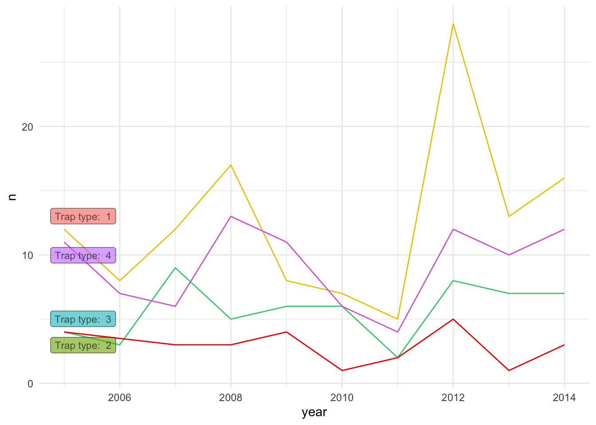

Further customization
Pablo Gomez
2023-06-09
This lab continues on the work previously done for the Section I, make sure you have the objects generated in the previous section.
1 Themes
ggplot includes the function theme() to define most of
the aspects of the figure such as the background color, the grid, axes,
legend, among many others. There is also several predefined themes (all
start with theme_ followed by the name of the theme) that
you can use, if don’t want to mess with all the arguments from the
function theme(). For example:
# all the predefined themes start with theme_
figures$heatmap <- figures$heatmap +
theme_classic2() + # We will use the theme minimal
coord_equal() # we will set the coordinates to equal to improve the aspect ratio
figures$heatmap
2 Other aesthetics
2.1 Shape
There are other aesthetics we can define such as color, type of point, size, among many others. Lets try changing the point shape for one of the plots we previously did:
figures$scatter <- captures %>% # the data we are using
ggplot() + # we set the canvas
geom_point(aes(
x = captures, # X axis
y = treated, # Y axis
shape = factor(trap_type) # point shape
)) +
theme_classic() # now lets try the theme 'classic'
figures$scatter
2.2 Color
tCaptures <- captures %>%
mutate(date = as.Date(date, "%d/%m/%y"), # First we will format the date
year = lubridate::floor_date(date, 'year')) %>% # The we create a variable formatting the date as month of the year
count(year, trap_type) # Count the number of observations by month
figures$timeseries <- tCaptures %>%
ggplot() +
geom_line(aes(x = year, y = n, col = factor(trap_type))) +
theme_minimal()
figures$timeseries
3 Non aesthetics customization
So far we have added variables inside our aes()
function, but we can add some arguments outside the aes()
function that we want them to be applied for ALL observations. For
example, we can change the size and transparency of the points in our
scatter plot, which can be useful to see where there is more overlap of
observations:
figures$scatter <- captures %>% # the data we are using
ggplot() + # we set the canvas
geom_point(
aes(x = captures, y = treated, shape = factor(trap_type)), # aesthetics
size = 2.5,
alpha = 0.2 # alpha will define the transparency of the points
)
figures$scatter
You can change other components of the figure such as the color,
shape, size, etc.. Remember that everything that goes inside the
aes() function will be dependent on the variables from the
data and whatever goes outside are constants for all the
observations.
4 Scales
As you noticed by default R pick specific colors and shapes for the
variables we use to map our figure, scales in ggplot2 is a
way to specify the shapes, colors or sizes used for the figures. There
is a family of functions (scales_*) where *
represents the aesthetic we want to define. Depending on the type of
variable you want to set the scale for, you will select the
corresponding function.
4.1 Continuous values
For example, if we want to change the colors for the fill on a
continuous variable we can define the colors for a gradient with the
function scale_fill_gradient().
figures$heatmap <- figures$heatmap + # Lets us our previously defined heatmap
scale_fill_gradient(low = 'black', high = 'red') # we use the function to set the colors
figures$heatmap
4.2 Categorical values
When using categorical variables we define a specific color palette. For this we need to know how many categories our variable has. For example
# Define a oclor palette
colpal <- c('gold2', 'seagreen3', 'red2', 'orchid')
# Make the figure
figures$bars <- figures$bars +
scale_fill_manual(values = colpal) # We know our variable has 4 categories, so we define 4 colors
figures$bars
4.3 How to find colors?
R manages colors in three different ways: by name (i.e: ‘red’), by
rgb value using the function rgb()
(i.e. rgb(1, 0, 0)), or using hexadecimal
code (i.e. “#F00000”). You can get a full list of the named colors
in R by using the function colors(), but you will only be
able to see the names. Luckly someone made a tool that can help us
exacly the colors that we want: the Colour Picker addin. Addins
are tools that are available in Rstudio to facilitate tasks, lets try
the colour picker (should be already in your addins
toolbar).

Other resources to find colors include:
- Coolors palette generator: This website generates random color palettes and includes other user generated palettes
- Colour contrast checker: This website has a tool to check the contrast between two colors, can be useful when setting labels and other annotations in our figures.
5 Labels
Usually we try to avoid spaces when using names for the column names,
but for our figure labels this could be not the most straight forward
way to communicate our analysis, we can set specific labels to make our
plots more readable and self explanatory. Let’s improve bar plot figure
a bit more to make it clearer, we can use the figure we previously
created contained in our figures list figures$bars
figures$bars <- figures$bars + # we call the figure previously created
labs(# We will use the function labs to generate our labels
title = 'Number of observations by Municipality', # The title we will give to our figure
x = 'Number of observations', # The label for x axis
y = 'Municipality', # label for y axis
fill = 'Trap type'
)
figures$bars
5.1 In figure labels
library(ggrepel)
lab <- tCaptures %>%
group_by(trap_type) %>%
filter(year == min(year))
figures$timeseries +
geom_label_repel(data = lab, aes(x = year, y = n, label = paste('Trap \n type: ', trap_type), fill = factor(trap_type)), alpha = 0.6, size = 3) +
scale_color_manual(values = colpal)
6 Beyond basic themes
Lets pretend that we want to flip the axis from our bar plot because
we think will fit better our report, we can do that from the
aes() function by redefining the axes, but in this case I
will just use the function coord_flip() to do the same.
figures$bars <- figures$bars + # we call the figure previously created
coord_flip() # We use this function to flip the x and y axis.
figures$bars
Like you will notice, there is some overlap between the municipalities text and we can barely read them. We can modify the position of the x labels to fix this, to do this we need to modify the theme.
6.1 Labels
The theme() function has a bunch of arguments which you
can see in detail in the documentation (or using the auto complete
functionality in RStudio/posit.cloud), the argument we will need to
define is axis.text.x, the argument takes a specific type
of object used to format the text, to create this object we use the
function element_text(). It will make more sense when we
try it:
figures$bars <- figures$bars + # we call the figure previously created
coord_flip() + # We use this function to flip the x and y axis.
theme(axis.text.x = element_text(angle = 40, size = 7))
figures$bars
6.2 Grid
Other things we can change in the theme() function
includes the background of the figure, lets make some changes to the
grid and the background color.
figures$bars <- figures$bars +
theme(
panel.grid = element_line(color = 'grey80'), # Change the color of the grid
panel.grid.major.x = element_blank(),# Remove the grid for the x axis
panel.background = element_rect(fill = 'mintcream') # Change the background of the figure
)
figures$barsIf you noticed, when defining the arguments, I used different
functions for the elements used (i.e. element_blank(),
element_rect(), element_line()). Depending on
the theme element you will need to define the appropiate element to use,
in brief:
element_blank()is for empty elements (i.e. when you want to remove it)element_rect()is for filled geometries (i.e. the background of the panel or legend)element_line()for lines such as the gridelement_text()for text elements such as the labels
7 Exercise:
Now spend some time using the resources we talked about to modify the figure and be creative with the colors and the theme, maybe use the color scale of your favorite sports team, character of a movie, or something you like. Feel free to modify any of the figures that we previously created!